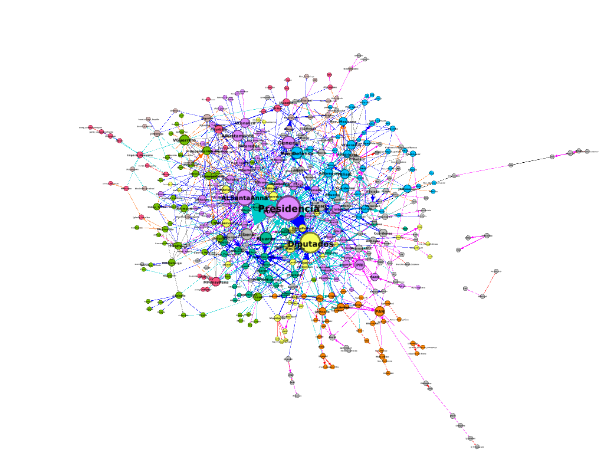

| Posición respecto al aparato de Estado | Clase | Descripción | Cargos |
|---|---|---|---|
| Interno | Intra | Contribuye directamente con el Jefe de Estado y de Gobierno de la República. | Presidente, Vicepresidente, Ministros, Embajadores, Directivos de banca estatal. |
| Interno | Para | Forman parte del contrapeso institucional al poder Ejecutivo. | Gobernadores, Diputados, Senadores, Jueces, Magistrados, Militares. |
| Interno | Sub | Cargos de gobierno o legislatura a nivel local o municipal, dependientes de un gobierno regional. | Alcaldes, líderes de partidos políticos, estructuras y grupos anexos. |
| Externa | Exa | Fuera del aparato de Estado; poseen influencia por grupos de interés y presión. | Empresarios, banqueros, gremios industriales, comerciantes, líderes sindicales. |
| Externa | Ana | Grupos contrarios al aparato de Estado que persiguen cambios radicales (lucha armada). | Movimientos insurgentes, revolucionarios o grupos paramilitares. |
Acercamiento a la definición del capital burocrático
teoría
capital burocrático
Introducción del capital burocrático
1 El capital político como indicador
Usualmente, el capital político ha sido considerado como una metáfora para describir el campo de influencia de un actor, grupo, empresa, país o institución en algún ámbito de referencia.
El capital político se refiere al conjunto de recursos que acumula un actor, camarilla o red que facilita la influencia en las relaciones políticas a partir del uso instrumental del prestigio personal, cargos burocráticos, financieros, militares o sociales, así como su capacidad de movilización de diversos recursos para lograr objetivos estratégicos.
Como otras formas de capital social, económico o ambiental (Bourdieu et al., 2021), puede ser acumulado por individuos, grupos y organizaciones y puede ser utilizado para obtener beneficios políticos, como acceso a recursos y decisiones, apoyo en elecciones y promoción de políticas y programas. En este sentido, el capital político es un recurso valioso para aquellos que buscan influir en las decisiones políticas y en la construcción de políticas públicas.
1.1 1.1 El capital burocrático (kb)
La relación entre el capital político y el Estado es esencial para entender cómo las personas logran sus objetivos en función de las circunstancias que enfrentan. En consecuencia, parte del prestigio que un personaje político obtiene de su entorno depende de su habilidad y éxito en la dirección de organismos e instituciones.
Tip
El prestigio de un personaje político depende de su éxito para dirigir organismos o instituciones.
Siguiendo este principio, la clasificación del capital político en función de su cercanía al Estado nos permite entender la diversidad en el capital político de un individuo o grupo, tanto dentro como fuera del aparato estatal Tabla 1
Dentro del ámbito interno, existen tres subcategorías que corresponden a las instituciones gubernamentales de los poderes ejecutivo, legislativo, judicial, así como al ejército y los partidos políticos, que forman la parte central del Estado nacional. En el centro del aparato estatal se encuentra la presidencia de la República, que ostenta la facultad de liderar el Estado y el gobierno, así como a sus subordinados directos, como secretarios o ministros, subsecretarios y otros directivos que dependen jerárquicamente del presidente. A esto le llamamos el ámbito Intra-burocrático.
Por otro lado, aquellos cargos que actúan como contrapeso al ejecutivo federal y que tienen una relación cercana pero indirecta con la función pública los denominamos para-burocráticos. Esto incluye las gobernaturas, el ejército regular, la Suprema Corte y el Congreso Legislativo.
Los cargos sub-burocráticos son aquellos que dependen de entidades regionales, como alcaldías, presidencias municipales y otras dependencias locales, así como partidos políticos. Aquí se gestan las estrategias electorales, pero su existencia como institución depende de ganar elecciones.
Por otra parte, los cargos directivos que se encuentran fuera del aparato de Estado se dividen en dos categorías. La primera de ellas es la exa-burocrática, que incluye cargos no estatales pero influyentes, como empresas, bancos, consejos de administración, pequeños negocios y gremios empresariales. También se incluyen organizaciones de la sociedad civil, sindicatos, movimientos civiles e instituciones educativas.
Finalmente, la categoría ana-burocrática se refiere a organizaciones que se oponen a la continuidad del aparato de Estado, como organizaciones revolucionarias, movimientos insurgentes, contra-insurgentes, grupos paramilitares, invasores y otros movimientos armados.
2 2. Centralidad en la complejidad de la red política
En el ámbito político, no solo se trata de tener la capacidad necesaria para dirigir o resolver problemas de gran importancia, sino también de contar con los contactos necesarios para movilizar recursos públicos o privados. Si un político carece de estos contactos, su eficacia se verá limitada. Camp señala que la variable más asociada al éxito en el ascenso a cargos en la estructura burocrática radica en la centralidad de los “padrinos” o reclutadores de nuevos políticos para ingresar al aparato de Estado y con ello formar parte de la red política histórica (rph).
Cuando conocemos a alguien por primera vez, establecemos un contacto el cual puede o no ser relevante para nuestra vida. Cuando fortalecemos y diversificamos nuestros vínculos con esa persona, incrementa el valor o peso de dicho contacto y se transforma en una conexión. A mayor cantidad de tiempo y diversificación de los vínculos, mayor será el peso de la conexión. en este sentido a calidad de la conexión es casi tan o más importante que el número de contactos.
A mayor número de conexiones con actores clave dentro de la rph, mayor será su probabilidad de éxito para obtener un cargo relevante en el Estado o en su partido (gilmendieta?) (camp1996?). Para establecer dichas conexiones, se requiere poseer ciertas habilidades sociales y psicológicas para ingresar, mantenerse y avanzar a posiciones más estratégicas dentro del aparato de Estado. Para analizar la formación de las conexiones a través del tiempo e identificar a los actores centrales, utilizamos la metodología de redes complejas. Éstas se definen como una grafo con características topológicas no triviales presentadas normalmente en redes biológicas, climáticas, tecnológicas y sociales. Sus nodos establecen múltiples vínculos a través del tiempo y sus estructuras tienden a adaptarse a los cambios de manera orgánica. Una red compleja se comporta como un sistema complejo, cuyas características son:
Se componen por muchas partes interactuantes;
Cada componente tiene su propia estructura interna -como es el caso de los clústers o camarillas políticas- y cada una de ellas realiza una función o comportamiento específico;
El comportamiento de una pequeña parte del sistema afecta de una manera no lineal a la totalidad del sistema.
Los sistemas complejos presentan comportamiento emergente, es decir, estructuras, funciones y comportamientos innovadores que permiten la reproducción de nuevas estructuras para el sistema en su conjunto.
La visualización del grafo y la medición de sus conexiones y componentes a través del tiempo, permiten analizar a las redes políticas históricas en tanto representan un ejemplo de redes complejas. A través del análisis de redes sociales (ARS), mediremos la centralidad de los precandidatos para conocer el tipo y la cantidad de conexiones con personajes e instituciones políticas, así como el grado de agrupamiento que permita identificar la conexión con diferentes grupos de poder histórico.Además con la identificación de clústers, se identifican, miden y pesan los bloques, instituciones y actores centrales en torno a los cuales se despliega una parte importante de los nodos. Los Congresos Legislativos, las gobernaturas, los partidos políticos, así como movimientos de insuficiencia, batallas, empresas u organizaciones civiles son ejemplos de conexiones que aglutinan a actores políticos y que dada la relevancia de cada nodo. En suma, las conexiones que se establecen al interior de una red política son mixtas, y se componen de actores, instituciones y acontecimientos.
Destacan los trabajos sobre la red política mexicana Gil y Schmidt (gilmendieta2005?)sobre la red política mexicana durante el siglo XX, la cual se formó después del gobierno de Porfirio Díaz y tras el ascenso de Francisco I. Madero. Sin embargo, es a partir del periodo armado de la Revolución Mexicana donde la red se establece de manera sólida, al menos para los cien años siguientes. En la década de los años cuarenta, la Red Política Mexicana experimentó una bifurcación que dio origen a dos grandes subredes: los políticos y los financieros. Estos se distinguen por su orientación ideológica y pragmática hacia la dirección del Estado. Los primeros, que se originaron durante el gobierno de Lázaro Cárdenas del Río (1934-1940) y continuaron hasta la administración de Andrés M. López Obrador (2018-2024), se caracterizan por su orientación social en las políticas públicas y sus vínculos con sindicatos, partidos de izquierda y otros movimientos sociales. En contraste, los financieros se originaron durante el gobierno de Miguel Alemán Valdés (1946-1952) y continuaron hasta Enrique Peña Nieto (2012-2018); se caracterizan por su orientación hacia el capital y su conexión directa con la burguesía (bustosnájera2016?).
Red política Histórica

En suma, el grado de centralidad, la identificación de clústers y el número de conexiones a través del tiempo forman parte de las herramientas analíticas que nos permiten evaluar y comparar la formación del capital político, en función del plan estratégico de cada actor.
2.1 3. Plan estratégico
El plan estratégico se refiere al conjunto de acciones articuladas y planificadas para alcanzar objetivos fehacientes. Son comportamientos emergentes de la red compleja, que generan innovaciones en el sistema a partir de la realización de planes y proyectos emprendidos por los actores políticos para lograr un fin propuesto, los cuales pueden chocar o no, con los planes de otros actores, estableciéndose así tensiones y conflictos particulares en la rph.
A partir de la revisión histórica de ocho países (Argentina, Chile, Cuba, Costa Rica, Brasil, México, Bolivia y Colombia) se identificaron tres tipos de planes estratégicos, de las cuales se desprenden siete sub-categorías que se describen a continuación:
a) Continuidad
Conservar: Son aquellos gobernantes en turno que se postulan para continuar en el cargo de manera inmediata.
Mantener: Aquellos candidatos que buscan la continuidad de un gobierno en turno ya sea por pertenecer al mismo partido, pertenecer al gabinete o tener cierto grado de cercanía personal o política con el gobernante en turno y que son personas diferentes al gobernante actual.
Interinato: Aquellos personajes que se convierten en gobernantes por razones extraordinarias, pero contempladas en las normas constitucionales por casos de abandono, suspensión, muerte u otra causalidad que conlleva a que el gobernante en turno no pueda ejercer su cargo, por lo que otra persona dentro o fuera del poder ejecutivo asuma el cargo de gobernante de manera temporal.
b) Renovación
Recuperar: Son aquellos ex gobernantes que pretenden retomar el cargo en una elección no inmediata al término de su administración.
Restaurar: Son aquellos personajes que representan aquellos gobernantes que instauran un nuevo régimen de gobierno, ya sea a través de una nueva república, imperio o sistema democrático.
c) Cambio
Despojar: Aquellos personajes quienes pretenden obtener el cargo de gobernante mediante un golpe de Estado, sin pasar por un proceso electoral o mediante uso de la violencia contra el gobernante en turno.
Alternar: Son aquellos candidatos que no han sido gobernantes en al menos dos comicios anteriores y que pertenecen a un partido, movimiento o fuerza opositora al gobernante en turno.
Referencias
Bourdieu, P., Champagne, P., Poupeau, F., Rivière, M.-C., & Bourdieu, P. (2021). Forms of capital: lectures at the Collège de France (1983-1984) (J. Duval, Ed.). Polity.